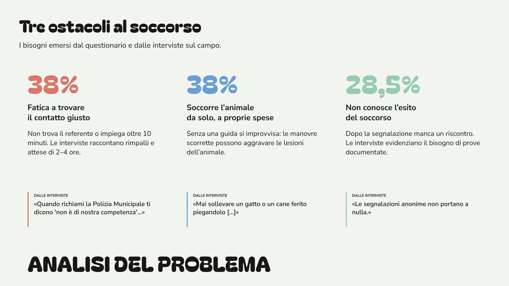
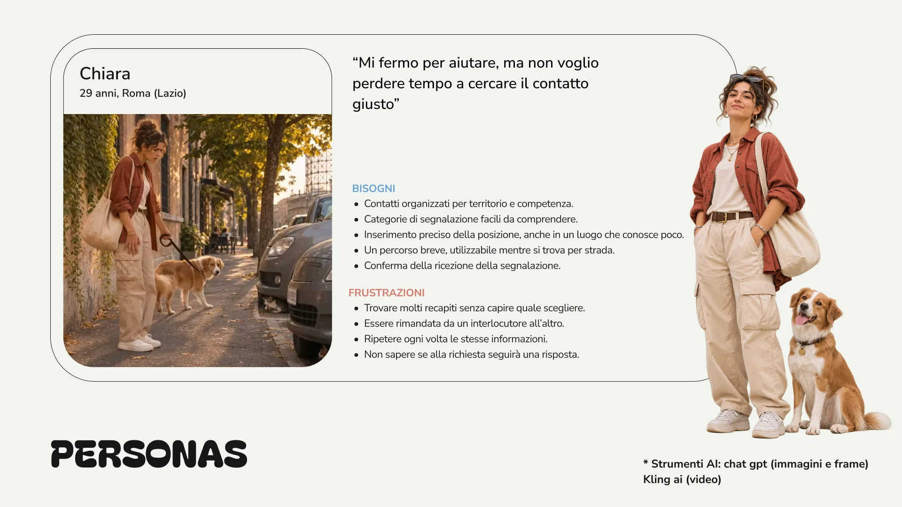
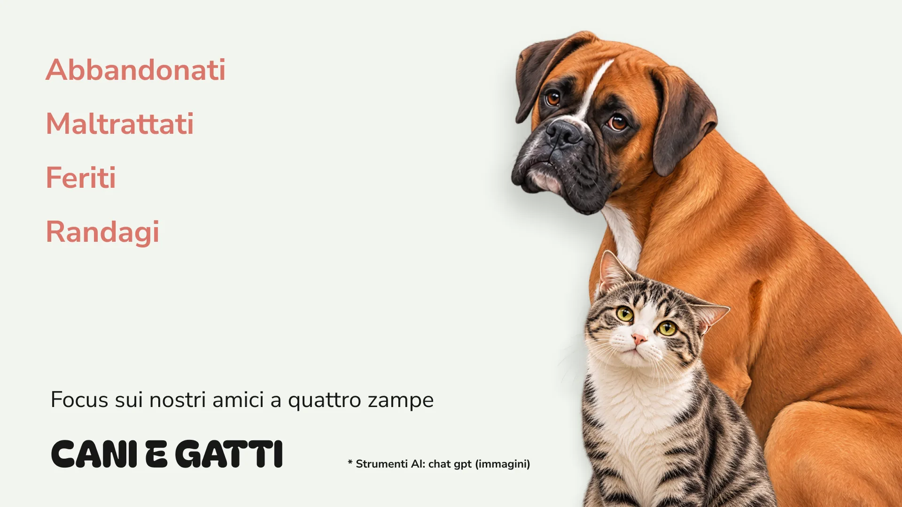
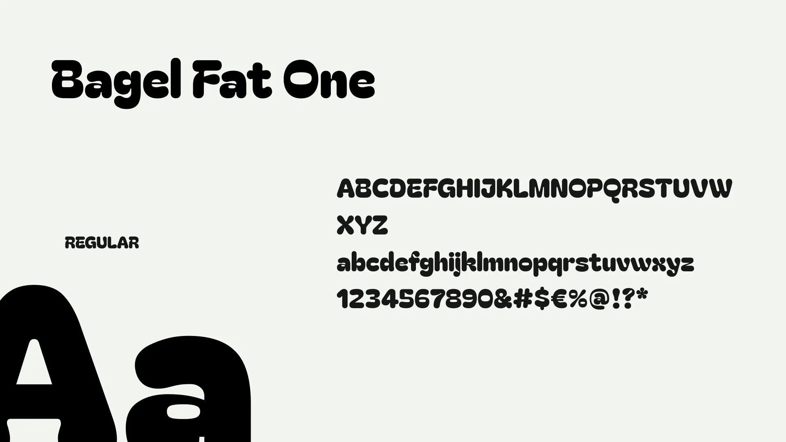

Vai al contenuto
Analisi del problema

Persona Chiara

Cani e gatti

Flusso 1 e 2, logo animation e onboarding
Flusso 3, homepage, mappa, contatti e guida
Flusso 4 e 5, segnalazioni e account
Bagel Fat One

Loghi